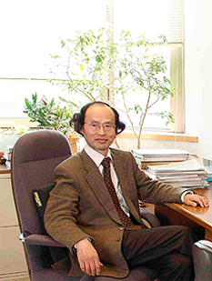
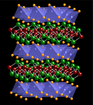
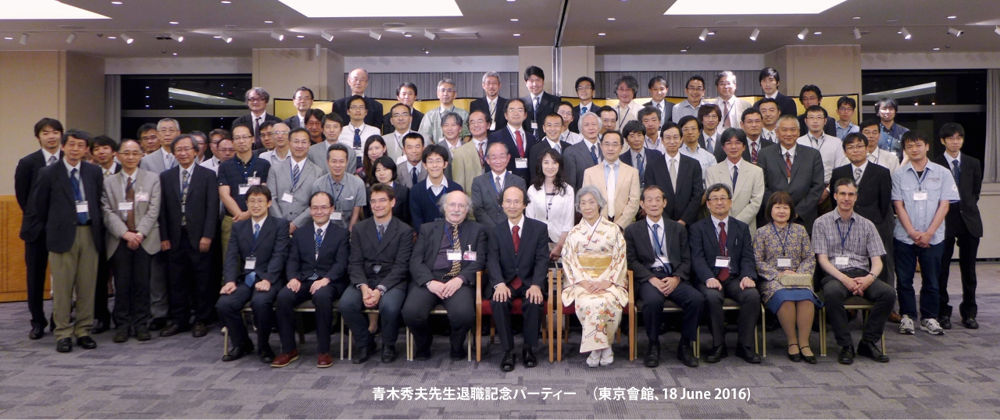

 |
 |
鉄系超伝導体クリックすると動画が開きます。 |
研究概要
青木研では一貫して、「超伝導」、「強磁性」、「分数量子ホール効果」に代表される多体効果の理論を主眼に研究を行っている。これらの現象では、電子相関（電子間斥力相互作用のために生じる量子効果）により、ゲージ対称性が自発的に破れる。一方、面白い物質構造から面白い物性物理を探る「物質設計」や、非平衡における新奇な物性を探ることを、もう一本の柱としている。
東大からの定年退職後の2016年度からは東大名誉教授として、また産総研（筑波）において研究を続けている。
新着情報
- 2024.01.29
-
青木は、2021年以降も、
V. Valmispild, E. Gorelov, M. Eckstein, A. Lichtenstein, H. Aoki, M. Katsnelson, M. Ivanov and O. Smirnova:
Sub-cycle multidimensional spectroscopy of strongly correlated materials,
Nature Photonics (2024) DOI: 10.1038/s41566-023-01371-1;
Sharareh Sayyad, Motoharu Kitatani, Abolhassan Vaezi, and Hideo Aoki:
Nematicity-enhanced superconductivity in systems with a non-Fermi liquid behavior,
Journal of Physics: Condensed Matter 35, 245605 (2023);
Sota Kitamura and Hideo Aoki:
Floquet topological d+id superconductivity induced by chiral many-body interactions;
Communications Physics 5, 174 (2022)
Kazunari Ochi, Hiroyuki Tajima, Kei Iida, and Hideo Aoki:
Resonant pair-exchange scattering and BCS-BEC crossover in a system composed of dispersive and heavy incipient bands: a Feshbach analogy,
Phys. Rev. Research 4, 013032 (2022);
Changming Yue, Hideo Aoki and Philipp Werner:
Superconductivity enhanced by pair fluctuations between wide and narrow bands,
Phys. Rev. B 106, L180506 (2022)
などの論文を出版している。 - 2021.04.30
- 青木は、「固体物理」誌に、「物性物理学のルネサンス ― 超伝導、トポロジカル系、非平衡」と題した シリーズを連載していたが、それが第四回で完結した。 （連載全体の原稿はこちら）
- 2020.10.06
- 銅以外の化合物での高温超伝導探索は長年の懸案であったが最近Stanfordで 実験的にニッケル酸化物超伝導体(Nd,Sr)NiO2において発見された。青木は榊原（鳥取大）等の グループと、この物質の電子状態計算から出発して超伝導の電子機構を調べ、この系では電子間斥力が強過ぎるために Tcが銅酸化物より抑制されている等を示した [H. Sakakibara, H. Usui, K. Suzuki, T. Kotani, H. Aoki, and K. Kuroki: Model construction and a possibility of cuprate-like pairing in a new d9 nickelate superconductor (Nd,Sr)NiO2, Phys. Rev. Lett. 125, 077003 (2020) (Editors' suggestion)]。
- 2020.10.06
- Li (Chinese Academy of Sciences)、内田（産総研）等のグループが、新しい銅酸化物Ba2CuO3+δにおいて Tc=70 K級の超伝導を発見して2019年に報告した。従来は銅酸化物高温超伝導にはCuO2面が必須との常識 に反して新物質では面内酸素の数割が欠損しており、理論的なチャレンジとなる。 黒木のグループと青木は、可能な結晶構造候補として銅原子から成るLieb格子 （平坦バンド模型として知られる）を提案し、超伝導の電子機構において 軌道内ペアリングと軌道間ペアリングが共存し、そこでは多軌道性が意外にも超伝導を有利化、 平坦バンドと分散バンドの間で符号反転するs±波超伝導が増強される ことを示した。さらに、Lieb模型における超伝導と、通常の銅 酸化物に対する２軌道模型や、２層Hubbard模型における超伝導の間に密接な関連があることも示された [K. Yamazaki, M. Ochi, D. Ogura, K. Kuroki, H. Eisaki, S. Uchida, and H. Aoki: Superconducting mechanism for a new-type cuprate Ba2CuO3+δ based on a multiorbital Lieb lattice model, Phys. Rev. Research 2, 033356 (2020)]。
- 2020.10.06
- Hafezi (Maryland) 等のグループと青木は、グラフェンに代表される系のトポロジカルな性質を光で in situに制御する新たな方法として、空間周期的な円偏光を照射 することにより、Chern数やFloquetバンド構造の制御ができることを 提案した [H. Kim, H. Dehghani, H. Aoki, I. Martin, and M. Hafezi: Optical imprinting of superlattices in 2D materials, Phys. Rev. Research 2, 043004 (2020)]。
- 2020.10.06
- 青木は、「固体物理」誌に、「物性物理学のルネサンス ― 超伝導、トポロジカル系、非平衡」と題した シリーズの連載を開始した。 （連載第一回の原稿はこちら）
- 2020.01.20
- 岡・青木が理論的に予言した [Takashi Oka and Hideo Aoki, Phys. Rev. B 79, 081406(R) (2009)]、 グラフェンに円偏光を照射するとトポロジカル絶縁体になる、という 現象が、ハンブルクのマックス・プランク研究所の James McIver等により実証され、Nature Physics 16, 38 (2020)に出版され、表紙も飾った。
- 2020.01.06
- 部分的に平坦なバンドにおいて、特異な 非従来型超伝導が生じることを理論的に示した論文が、 Sharareh Sayyad, Edwin W. Huang, Motoharu Kitatani, Mohammad-Sadegh Vaezi, Zohar Nussinov, Abolhassan Vaezi and Hideo Aoki: Pairing and non-Fermi liquid behavior in partially flat-band systems としてPhys. Rev. B 101, 014501 (2020) に出版された。
- 2018.12.01
- 青木は、2018年6月から7月まで、ハンブルクの マックス・プランク研究所に客員研究員として滞在し、 量子凝縮系ダイナミックス・グループのAndrea Cavalleri教授の グループと共同研究・議論を行った。また、2018年11月には、 グルノーブルのフランス国立強磁場研究所(LNCMI)に 滞在し、Marek Potemsky博士のグループと、グラフェンおよび 関連物質についての議論を行った。
- 2018.03.15
- 銅酸化物高温超伝導体(d波超伝導）におけるヒッグス・モードが、島野研究室（東大）により実験的に観測され、その理論解析に青木と 辻（理研）が協力した論文が、Phys. Rev. Lett.に、editor's suggestionとして出版されました。 [Kota Katsumi, Naoto Tsuji, Yuki I. Hamada, Ryusuke Matsunaga, John Schneeloch, Ruidan D. Zhong, Genda D. Gu, Hideo Aoki, Yann Gallais, Ryo Shimano: Higgs mode in the d-wave superconductor Bi2Sr2CaCu2O8+x driven by an intense terahertz pulse, Phys. Rev. Lett. 120, 117001 (2018)]
- 2017.09.15
-
青木は2017年9月から12月まで、ETH Zurich（スイス連邦工科大学）
の物理学科の客員教授として赴任しています。大学院の
"Quantum states of matter"の講義も行います。
青木は、今年から開始された科研費基盤研究S「トポロジカル相での バルク・エッジ対応の多様性と普遍性：固体物理を越えて分野横断へ」
http://rhodia.ph.tsukuba.ac.jp/~hatsugai/modules/pico/index.php?content_id=216
の分担者として研究しています。
- 2016.07.04
-
東京大学から青木に名誉教授号が授与されました。
- 2016.06.24
-
青木の東京大学からの定年退職を記念したパーティーが
東京會館（大手町）で開催されました。

- 2016.06.22
-
国際シンポジウム
"International Symposium on New Horizons in Condensed Matter Physics"
(Sat 18 - Sun 19 June 2016)
http://fpmrt.riken.jp/public_html/aoki.symposium/index.html
が東京大学（本郷） 小柴ホールで開催されました。
講演者は Jun Akimitsu, Hideo Aoki, Ryotaro Arita, F. D. M. Haldane, Koji Hashimoto, Karsten Held, Kazuhiko Kuroki, Peter Maksym, Hiroshi Ooguri, Ryo Shimano, Yoshiro Takahashi, Philipp Werner です。 - 2016.04.04
-
青木は2016年3月末に東京大学理学系研究科物理学専攻からの定年退職を無事迎えました。
2016年4月からは、ImPACTや科研費の外部資金に基づき、研究を
東京大学大学院 理学系研究科物理学専攻
(113-0033 東京都文京区本郷7-3-1)
産業技術総合研究所 電子光技術研究部門
(305-8568 茨城県つくば市梅園 1-1-1)
で続けます。

ご連絡先
〒113-0033
東京都文京区本郷7-3-1
理学部１号館
東京大学 大学院
理学系研究科 物理学専攻
青木 秀夫
Email:
aoki_at_phys.s.u-tokyo.ac.jp